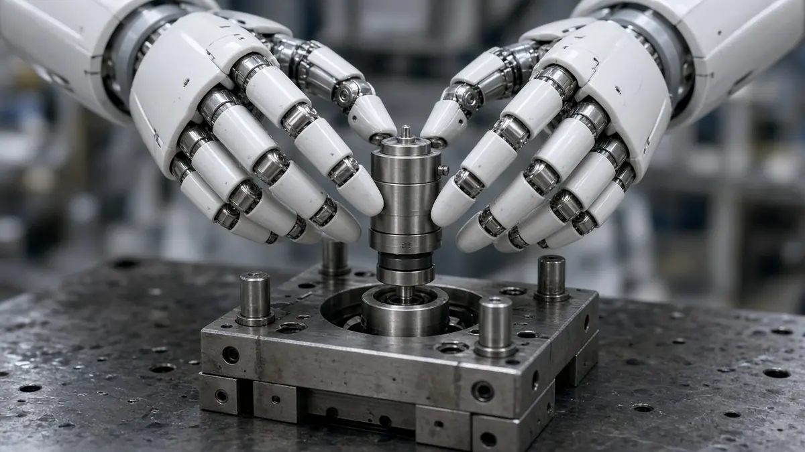
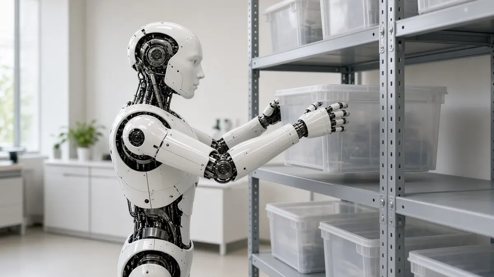

Industry
Schaeffler opens Taicang factory where humanoids help build parts for humanoids
Short answer: Schaeffler, the German motion-technology company, has opened a roughly 7,500 square metre "lighthouse" factory in Taicang, China, where six humanoid robots help assemble joint modules, including actuators, for other humanoid robots, the company said in a press release dated 20 October 2026.
According to Schaeffler, the six humanoids work across five stations on an assembly line the company developed. They stage and sort parts, join them, then inspect, label and package the finished modules. A digital twin mirrors the line in real time and logs measures such as assembly accuracy, step duration and energy use, so changes can be tested virtually before they reach the real line.

The site also holds a training and data-collection centre. Schaeffler says it trains humanoids there for tasks such as visual inspection, packaging, material handling, moving containers and line-side restocking, using set-ups modelled on conditions in its roughly 100 manufacturing plants. The company says the factory marks the start of mass production of these components for Schaeffler.

Schaeffler also says it added two customers from the Greater China region in the third quarter of 2026, lifting its global humanoid-robotics order intake to about 400 million euros. Gasgoo adds that Schaeffler Embodied Intelligence (Taicang) Co., Ltd. was set up in early 2026 to develop the site, and describes it as a platform for working with Chinese robotics companies.